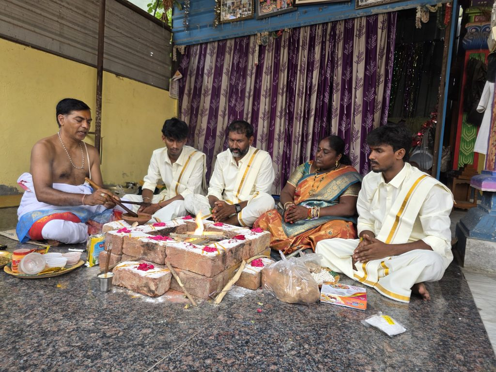

Ghar Vapsi — literally meaning "Returning Home" — is a socio-spiritual initiative aimed at reconnecting individuals and families who were historically separated from their Sanatan Dharma due to socio-political circumstances, coercion, or lack of awareness. It is not about conversion; it is about reclaiming one's original identity, culture, and heritage.
For centuries, Bharat has seen periods where large populations were distanced from their native traditions — often through force, deception, or colonization. Ghar Wapsi is a respectful and voluntary process of reuniting those individuals with the eternal values and inclusive practices of Hindu dharma.
